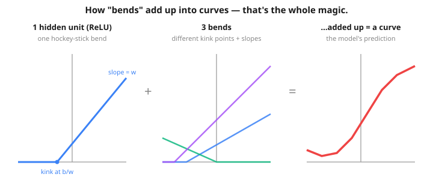

Bridge between L1's two-knob model and L4's tiny BERT. Same training loop. Different model in the middle.
Imagine you're trying to trace a shape with a stick:
The cool part: you train all three the exact same way — the 5-line loop from L1. Only the "stick" changes. That's the entire lesson. Everything below just proves it with a real curve.
⬇ Want the proof? Keep going. Just wanted the idea? You can skip to the big reveal. ⬇
One dataset, four models, same training loop:
| Approach | Parameters | Can it fit a curve? |
|---|---|---|
Linear regression (L1: y = w*x + b) | 2 | ❌ No |
Polynomial regression (handcrafted x² feature) | 3 | ✅ Yes |
| Neural net (Linear → ReLU → Linear) | ~30 | ✅ Yes (no handcrafting) |
| Transformer (BERT, PRAGMA) | thousands–billions | ✅ Yes, on sequences |
L1's data was y = 2x + 1, a straight line. Linear regression nailed it because a line is exactly what linear regression can fit.
This time the secret rule is a parabola: y = x² − 4x + 3 plus a little noise. The y values go down and then up — no straight line can fit that.
Same model as L1: y = w*x + b. Two parameters. After 1000 steps the loss settles near 25 (compare to L1's 0.0001 on its straight-line data). No straight line can pass through a U-shape.
w = torch.tensor(0.0, requires_grad=True)
b = torch.tensor(0.0, requires_grad=True)
opt = torch.optim.SGD([w, b], lr=0.001)
for _ in range(1000):
y_pred = w * x_data + b
loss = ((y_pred - y_true) ** 2).mean()
opt.zero_grad(); loss.backward(); opt.step()Key insight that confuses everyone: "linear regression" doesn't mean "fits a line in x". It means "linear in the parameters". We can give it any transformation of x as a feature.
Add x² as a feature and the model becomes:
y = w₁ · x + w₂ · x² + bStill linear regression (3 parameters). But now it can fit a parabola. After 2000 steps the loss drops to near zero and the recovered coefficients almost exactly match the true rule.
🤔 The catch. How would you know to add x²? What if the relationship were sin(x) or something more complex? For simple data you can guess; for complex data (text, images, banking events) there are too many possible features to enumerate. That's where neural networks come in.
A neural network is a stack of linear transformations with nonlinear activations in between. The simplest one (a Multilayer Perceptron, or MLP) for our problem:
input x │ ▼ Linear ──► 8 hidden numbers │ ▼ ReLU ──► same 8 numbers, but negatives clipped to 0 │ ▼ Linear ──► 1 output number (the prediction)
The ReLU activation is the magic. Without it, two stacked Linears would produce a single linear function (composing linears gives a linear). With ReLU in between, the network can model curves, kinks, and arbitrarily complex patterns.
x² — the network learns them automatically.

So when the picture above shows "8 hidden units", picture 8 hockey-sticks being placed at different spots along the x-axis, then weighted and summed. The second Linear layer's job is to decide how much each bend contributes. The network learns where to put the bends — you never have to.
I trained the same MLP at different sizes (Linear→ReLU→Linear, 2000 Adam steps) on the parabola. Real numbers:
| hidden units | params | final MSE |
|---|---|---|
| 1 | 4 | 15.46 ❌ |
| 2 | 7 | 15.99 ❌ |
| 4 | 13 | 0.23 ✅ |
| 8 | 25 | 0.16 ✅ |
| 16 | 49 | 0.15 ✅ |
A clean cliff: 1 or 2 bends can't make a U-shape — the loss stays stuck around 15 (same as plain linear regression). At 4 bends the loss collapses to ~0.23 (essentially the noise floor — you can't beat the random noise we added). 8 and 16 give tiny extra gains. Bigger isn't always better; just enough is the sweet spot.
Each hidden unit computes ReLU(w·x + b) — a flat zero until x passes a threshold, then a straight ramp. That's a single "hockey-stick" bend. One bend isn't much, but if you add up many hockey-sticks with different thresholds and slopes, you can trace any wiggly curve as closely as you like — like building a smooth shape out of lots of tiny straight LEGO pieces.
That's all the universal approximation theorem says: enough bends → any shape. The network learns where to put each bend (the w and b) by gradient descent. Without the ReLU there are no bends, so stacking layers just gives you one straight line again.
class MLP(nn.Module):
def __init__(self, hidden=8):
super().__init__()
self.layer1 = nn.Linear(1, hidden) # 16 trainable knobs
self.layer2 = nn.Linear(hidden, 1) # 9 more knobs
def forward(self, x):
h = self.layer1(x)
h = F.relu(h)
return self.layer2(h)Same training loop. Same MSE loss. Same Adam optimiser. Only the model class changed.
The notebook shows Karpathy-style snapshots at steps 0 / 100 / 500 / 1000 / 2000 — you can SEE each hidden unit's "knee" sliding into place over training. By step 2000 the 8 knees cover different slices of x and sum (weighted by layer 2) to recreate the parabola.
| Model | Params | Final MSE |
|---|---|---|
| Linear regression | 2 | ~25 ❌ |
| Polynomial regression | 3 | ~0.25 ✅ |
| Neural network | 25 | ~0.25 ✅ |
The polynomial uses 3 parameters; the neural net uses 25. The neural net has extra capacity it didn't strictly need for this simple problem. So why ever use a neural network? Because for complex data you can't say "add x²" — the data is too complex for that intuition to apply. A neural network with enough capacity figures out the features for you.
The MLP you trained — Linear → ReLU → Linear — has a fancy name when it shows up inside a Transformer: the feed-forward sub-layer (or "FFN", or "MLP block"). They all mean the same thing.
Two tiny differences between your MLP and BERT's feed-forward:
Linear(1, 8)
ReLU
Linear(8, 1)25 parameters total.
Linear(512, 2048)
GELU
Linear(2048, 512)~2 million parameters per layer. Same shape, bigger.
So when you read "feed-forward layer" in any Transformer paper, picture the small MLP you trained on the parabola. Same architecture, scaled up.
You've trained an MLP with one hidden layer. BERT stacks 18 blocks, where each block is (attention + feed-forward). Common confusion:
Why depth matters intuitively. Each block builds on the previous block's output:
The notebook runs an empirical depth test on a sine wave: depth 1 → loss 0.10, depth 2 → 0.0016, depth 4 → 0.0009. Deeper models build hierarchical features that shallow models can't.
Before L2 and L3 — a subtle point. So far we've sorted models into two camps:
y = Σ wᵢ · feature_i + b.Embeddings and attention are NOT model classes. They're building blocks that plug into either kind of model. You can use an embedding inside a linear-regression-style head, or inside a neural-net head. Same for attention.
| Block | Adds nonlinearity? | What it adds |
|---|---|---|
| Embedding | No (pure lookup) | Trainable vector per discrete input |
| Attention | Yes (softmax inside) | Cross-token mixing |
| Feed-forward | Yes (GELU inside) | Per-token nonlinear capacity |
The notebook trains four small models — same data, mix-and-match — to drive this home:
| Demo | Building block | Head | Worked? |
|---|---|---|---|
| A | Embedding | Linear (regression style) | ✅ |
| B | Embedding | MLP (neural-net style) | ✅ |
| C | Attention | Linear (regression style) | ✅ |
| D | Attention | MLP (neural-net style) | ✅ |
Key insight: embedding and attention are reusable building blocks. The "linear vs neural" decision is a separate axis — it's about whether the head that consumes their output has a nonlinearity. A real Transformer block uses the MLP option (Demo D), and stacks 18 copies of it.
BERT, GPT, PRAGMA — they are NEURAL NETWORKS. Specifically a kind called Transformers. And a Transformer is built out of three pieces, all of which you now know:
The "trick" of the Transformer is just interleaving attention and feed-forward many times. Attention mixes information ACROSS tokens; feed-forward processes information WITHIN each token. Together they give the model enough capacity to learn rich patterns from sequences.
w*x + b; BERT has 18 stacks of attention + feed-forward.